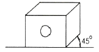
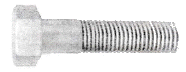
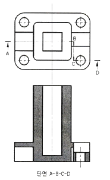
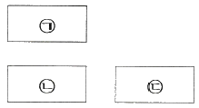
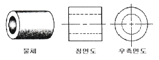

압연기능사 (2015-07-19 기출문제)
1과목: 금속재료일반
1. 공석조성을 0.80%C라고 하면, 0.2%C 강의 상온에서의 초석페라이트와 펄라이트의 비는 약 몇 % 인가?
- 초석페라이트 75% : 펄라이트 25%
- 초석페라이트 25% : 펄라이트 75%
- 초석페라이트 80% : 펄라이트 20%
- 초석페라이트 20% : 펄라이트 80%
(정답률: 73%)

2. 주요 성분이 Ni-Fe 합금인 불변강의 종류가 아닌 것은?
- 인바
- 모넬메탈
- 엘린바
- 플래티나이트
(정답률: 68%)
3. 7:3 황동에 1% 내외의 Sn을 첨가하여 열교환기, 증발기 등에 사용되는 합금은?
- 코슨 황동
- 네이벌 황동
- 애드미럴티 황동
- 에버듀어 메탈
(정답률: 82%)
4. 상율(Phase Rule)과 무관한 인자는?
- 자유도
- 원소 종류
- 상의 수
- 성분 수
(정답률: 72%)
5. 다음 중 이온화 경향이 가장 큰 것은?
- Cr
- K
- Sn
- H
(정답률: 74%)
6. 탄소강 중에 함유된 규소의 일반적인 영향 중 틀린 것은?
- 경도의 상승
- 연신율의 감소
- 용접성의 저하
- 충격값의 증가
(정답률: 54%)
7. 다음 중 탄소강의 표준 조직이 아닌 것은?
- 페라이트
- 펄라이트
- 시멘타이트
- 마텐자이트
(정답률: 72%)
8. 금속의 물리적 성질에서 자성에 관한 설명 중 틀린 것은?(오류 신고가 접수된 문제입니다. 반드시 정답과 해설을 확인하시기 바랍니다.)
- 연철(鍊鐵)은 잔류자기는 작으나 보자력이 크다.
- 영구자석재료는 쉽게 자기를 소실하지 않는 것이 좋다.
- 금속을 자석에 접근시킬 때 금속에 자석의 극과 반대의 극이 생기는 금속을 상자성체라 한다.
- 자기장의 강도가 증가하면 자화되는 강도도 증가하나 어느 정도 진행되면 포화점에 이르는 이 점을 퀴리점이라 한다.
(정답률: 61%)
9. 고강도 Al 합금으로 조성이 Al-Cu-Mg-Mn 인 합금은?
- 라우탈
- Y-합금
- 두랄루민
- 하이드로날륨
(정답률: 81%)
10. 실온까지 온도를 내려 다른 형상으로 변형시켰다가 다시 온도를 상승시키면 어느 일정한 온도 이상에서 원래의 형상으로 변화하는 합금은?
- 제진합금
- 방진합금
- 비정질합금
- 형상기억합금
(정답률: 93%)
11. 금속에 대한 설명으로 틀린 것은?
- 리튬(Li)은 물보다 가볍다.
- 고체 상태에서 결정구조를 가진다.
- 텅스텐(W)은 이리듐(Ir)보다 비중이 크다.
- 일반적으로 용융점이 높은 금속은 비중도 큰편이다.
(정답률: 73%)
12. 구리에 5~20%Zn을 첨가한 황동으로, 강도는 낮으나 전연성이 좋고 색깔이 금색에 가까워, 모조금이나 판 및 선 등에 사용되는 것은?
- 톰백
- 켈밋
- 포금
- 문쯔메탈
(정답률: 82%)
13. KS D 3503 에 의한 SS330 으로 표시된 재료기호에서 330 이 의미하는 것은?
- 재질 번호
- 재질 등급
- 탄소 함유량
- 최저 인장강도
(정답률: 88%)
14. 치수 공차를 계산하는 식으로 옳은 것은?
- 기준치수 - 실제치수
- 실제치수 - 치수허용차
- 허용한계치수 - 실제치수
- 최대허용치수 – 최소허용치수
(정답률: 83%)
15. 한 도면에서 두 종류 이상의 선이 같은 장소에 겹치게 되는 경우에 선의 우선 순위로 옳은 것은?
- 절단선 → 숨은선 → 외형선 → 중심선 → 무게중심선
- 무게중심선 → 숨은선 → 절단선 → 중심선 → 외형선
- 외형선 → 숨은선 → 절단선 → 중심선 → 무게중심선
- 중심선 → 외형선 → 숨은선 → 절단선 → 무게중심선
(정답률: 87%)
2과목: 금속제도
16. 그림과 같이 도시되는 투상도는?

- 투시투상도
- 등각투상도
- 축측투상도
- 사투상도
(정답률: 81%)
17. 그림과 같은 육각 볼트를 제작도용 약도로 그릴 때의 설명 중 옳은 것은?

- 볼트 머리의 모든 외형선은 직선으로 그린다.
- 골지름을 나타내는 선은 가는 실선으로 그린다.
- 가려서 보이지 않는 나사부는 실선으로 그린다.
- 완전 나사부는 불완전 나사부의 경계선은 가는 실선으로 그린다.
(정답률: 64%)
18. 미터 보통나사를 나타내는 기호는?
- M
- G
- Tr
- UNC
(정답률: 84%)
19. 다음 그림과 같은 단면도의 종류로 옳은 것은?

- 전단면도
- 부분단면도
- 계단단면도
- 회전단면도
(정답률: 62%)
20. 제도에 사용되는 척도의 종류 종 현척에 해당하는 것은?
- 1 : 1
- 1 : 2
- 2 : 1
- 1 : 10
(정답률: 90%)
21. 가공방법의 기호 중 연삭가공의 표시는?
- G
- L
- C
- D
(정답률: 81%)
22. 그림은 3각법의 도면 배치를 나타낸 것이다. ㉠, ㉡, ㉢ 에 해당하는 도면의 명칭이 옳게 짝지은 것은?

- ㉠-정면도, ㉡-우측면도, ㉢-평면도
- ㉠-정면도, ㉡-평면도, ㉢-우측면도
- ㉠-평면도, ㉡-정면도, ㉢-우측면도
- ㉠-평면도, ㉡-우측면도, ㉢-정면도
(정답률: 89%)
23. 다음 도면에 대한 설명 중 틀린 것은?

- 원통의 투상은 치수 보조기호를 사용하여 치수 기입하면 정면도만으로도 투상이 가능하다.
- 속이 빈 원통이므로 단면을 하여 투상하면 구멍을 자세히 나타내면서 숨은선을 줄일 수 있다.
- 좌·우측이 같은 모양이라도 좌·우측 면도를 모두 그려야 한다.
- 치수 기입시 치수 보조기호를 생략하면 우측면도를 꼭 그려야 한다.
(정답률: 83%)
24. 가는 2점 쇄선을 사용하여 나타낼 수 있는 것은?
- 치수선
- 가상선
- 외형선
- 파단선
(정답률: 68%)
25. 중후판의 압연 공정도로 가장 적합한 것은?
- 제강→가열→압연→열간교정→최종검사
- 제강→압연→가열→열간교정→최종검사
- 가열→제강→압연→열간교정→최종검사
- 가열→제강→열간교정→압연→최종검사
(정답률: 66%)
26. 압연 접촉부의 단면에서 전진하는 재료의 흐름과 후진하는 재료의 흐름으로 나누어지는 점은?
- elastic point
- yield stress point
- no slip point
- propotion point
(정답률: 72%)
27. 압연기의 Roll 속도가 500m/min, 선진율이 5%, 압하율이 35%일 때, 소재의 Roll 출측 속도로 옳은 것은?
- 425 m/min
- 525 m/min
- 575 m/min
- 675 m/min
(정답률: 60%)
28. 열간압연 후 냉간압연할 때 처음에 산세(pickling)작업을 하는 이유로 옳은 것은?
- 재료의 연화
- 냉간압연 속도의 증가
- 산화피막의 제거
- 주상정 조직의 파괴
(정답률: 88%)
29. 중후판 소재의 길이 방향과 소재의 강괴축이 직각되는 압연 작업은?
- 폭내기 압연(widening rikkubg)
- 완성압연(finishing rolling)
- 조정압연(controlled rolling)
- 크로스압연(cross rolling)
(정답률: 83%)
30. 금속의 냉간압연시 잔류응력이 발생하는 주요 원인으로 옳은 것은?
- 상변태
- 온도경사
- 담금질 균열
- 불균일 소성변형
(정답률: 69%)
3과목: 압연기술
31. 냉연강판의 결함 중 표면 결함에 해당되지 않는 것은?
- Dent
- Roll Mark
- 비금속 개재물
- Scratch
(정답률: 84%)
32. 지름이 700mm인 롤을 사용하여 70mm의 정사각형 강재를 45mm로 압연하는 경우의 압하율은?
- 15.5%
- 28.0%
- 35.7%
- 64.3%
(정답률: 66%)
33. 전해청정의 원리를 설명한 것으로 틀린 것은?
- 세정액 중의 2개의 전극에 전압으 걸면 양이온은 음극으로 음이온은 양극으로 전류가 흐른다.
- 전기분해에 의해 물이 H+ 로 OH- 로 전리된다.
- 음극에서의 산소발생량은 양극에서의 수소발생량의 3배가 된다.
- 전극의 먼지나 기체의 부착으로 인한 저항방지 목적으로 주기적으로 극성을 바꿔준다.
(정답률: 64%)
34. 압연가공에 영향을 주는 조건이 아닌 것은?
- 압연재의 변형저항
- 판의 두께 및 마찰계수
- Roll 재질
- 압연속도
(정답률: 68%)
35. 열간압연에 비해 냉간압연의 장점이 아닌 것은?
- 표면이 깨끗하다.
- 치수가 정밀하다.
- 소요 동력이 적다.
- 얇은 판을 얻을 수 있다.
(정답률: 83%)
36. 조질압연의 목적을 설명한 것 중 틀린 것은?
- 형상을 바르게 교정한다.
- 재료의 인장강도를 높이고 항복점을 낮게하여 소성 변형 범위를 넓힌다.
- 재료의 항복점 변형을 없애고 가공할때의 스트레처 스트레인을 생성한다.
- 최종 사용 목적에 적합하고 적정한 표면 거칠기로 완성한다.
(정답률: 60%)
37. 철강재료에서 청열취성의 온도(℃) 구간은?
- 110 ~ 260
- 210 ~ 360
- 310 ~ 460
- 410 ~ 560
(정답률: 83%)
38. 냉간압연 후 내부응력 제거를 주목적으로 하는 열처리는?
- 노멀라이징(Normalizing)
- 퀜칭(Quenching)
- 템퍼링(Tempering)
- 어닐링(Annealing)
(정답률: 55%)
39. 조압연에서 압연 중에 발생되는 상향(warp)원인 중에서 관련이 가장 적은 것은?
- 압연기 roll 상하 경차
- slab 표면 상하 온도차
- 압연기 상하 roll 속도차
- 압연용 소재의 두께가 얇을 때
(정답률: 64%)
40. 열처리용 연료 설비에서 공기와 연료가스를 혼합하여 주는 부분은?
- 버너(bunner)
- 컨벡터(convector)
- 베이스 펜(base fan)
- 쿨링커버(cooling cover)
(정답률: 80%)
41. 소성변형에서 핵이 발생하여 일그러진 결정과 치환되며 본래의 재료와 같은 변형능을 갖게 되는 것은?
- 조대화
- 재결정
- 담금질
- 쌍정
(정답률: 81%)
42. 재료의 압연에서 압연재의 치입 조건은?
- 마찰계수 ≥ 접촉각
- 마찰계수 ≤ 접촉각
- 마찰계수 ＜ 접촉각
- 치입전 소재 두께보다 압연 후 소재 두께가 작을수록 용이하다.
(정답률: 73%)
43. 일반적인 냉간 가공의 설명으로 옳은 것은?
- 가공 금속의 재결정 온도 이상에서 가공하는 것
- 가공 금속의 재결정 온도 이하에서 가공하는 것
- 상온에서 가공하는 것
- 20℃ 이하에서 가공하는 것
(정답률: 87%)
44. Roll의 중심에서 압연하중의 중심까지의 거리를 무엇이라 하는가?
- 투영 접촉길이
- 압연 토크
- 토크 길이
- 토크 암
(정답률: 74%)
45. 압연롤(Roll)에 요구되는 성질이 아닌 것은?
- 내사고성
- 연성
- 내마모성
- 경화심도
(정답률: 73%)
4과목: 압연설비
46. 냉연 박판의 제조공정 중 마지막 단계는?
- 전단 리코일
- 풀림
- 표면청정
- 조질압연
(정답률: 69%)
47. 냉간압연을 실시하면 압연재 조직은 어떻게 되는가?
- 섬유조직
- 수지상조직
- 주상조직
- 담금질조직
(정답률: 67%)
48. 산세처리 공정 중 스케일의 균일한 용해와 과산세를 방지하기 위해 첨가하는 재료는?
- 인히비트
- 디스케일러
- 산화수
- 어큐뮬레이터
(정답률: 69%)
49. 롤의 종류 중에서 애드마이트 롤에 소량의 흑연을 석출 시킨 것으로써 특히 열균열 바지 작용이 있는 롤은?
- 저합금 크레인 롤
- 구상 흑연 주강 롤
- 특수주강 롤
- 복합주강 롤
(정답률: 88%)
50. 관재 압연에서 죄조 완성압연에 사용되는 압연기는?
- 리일링 압연기
- 플러그 압연기
- 만네스만 압연기
- 필거 압연기
(정답률: 50%)
51. 압연기기의 구동 장치에서 동력 전달장치 구성 배열이 옳게 나열된 것은?
- Motor → 감속기 → 피니언 → 스핀들
- Motor → 피니언 → 감속기 → 스핀들
- Motor → 스핀들 → 감속기 → 피니언
- Motor → 감속기 → 스핀들 → 피니언
(정답률: 63%)
52. 작업 롤의 내표면 균열성을 개선시키기 위하여 첨가되는 원소가 아닌 것은?
- Cr
- Mo
- Co
- Al
(정답률: 74%)
53. 로상이 가동부와 고정부로 나뉘어 있고, 이동 로상이 유압, 전동에 의하여 재료사이에 임의의 간격을 두고 반송시킬 수 있는 연속 가열로는?
- 푸셔식 가열로
- 워킹빔식 가열로
- 회전로상식 가열로
- 롤식 가열로
(정답률: 72%)
54. 압연 하중이 3000 kgf, 모멘트 암의 길이가 6mm 일 때 압연 토크는 몇 kgf·m 인가?
- 18
- 36
- 500
- 18000
(정답률: 63%)
55. 안전교육에서 교육형태의 분류 중 교육 방법에 의한 분류에 해당되는 것은?
- 일반교육, 교양교육 등
- 가정교육, 학교교육 등
- 인문교육, 실업교육 등
- 시청각 교육, 실습교육 등
(정답률: 88%)
56. 얇은 판재의 냉간 압연용으로 사용되는 클러스터 압연기(cluster mill)에 속하는 것은?
- 3단 압연기
- 4단 압연기
- 5단 압연기
- 6단 압연기
(정답률: 65%)
57. 콘베이어 벨트나 설비에 위험을 방지하기 위한 방호 조치의 설명으로 틀린 것은?
- 회전체 롤 주변에는 울이나 방호망을 설치한다.
- 콘베이어 벨트 이음을 할 때는 돌출 고정구를 사용한다.
- 콘베이어 벨트에는 위험방지를 위하여 급정지장치를 부착한다.
- 회전 축이나 치차 등 부속품을 고정할 때는 방호커버를 설치한다.
(정답률: 78%)
58. 냉간박판의 폭이 좁은 제품을 세로로 분할하는 절단기는?
- 트리밍 시어
- 프라잉 시어
- 슬리터
- 크롭 시어
(정답률: 70%)
59. 냉간 압연 설비에서 EC(Edge Drop Control) 제어 설비에 관한 설명 중 옳은 것은?
- 냉연 제품의 폭 방향 두께를 편차를 제어하기 위한 설비이다.
- 냉연 제품의 크라운(Crown)을 부여하기 위한 설비이다.
- 냉연 제품의 Edge부 두께를 얇게 제어하기 위한 설비이다.
- 냉연 제품의 Edge부 형상을 좋게 하기 위한 설비이다.
(정답률: 52%)
60. 산세 공정에서의 탠션 레벨러(Tension Leveller)의 역할과 기능이 아닌 것은?
- 산세 탱크의 입측에 위치하여 후방 장력을 부여한다.
- 냉연 소재인 열연 강판의 표면에 형성된 스케일을 파쇄시킨다.
- 냉연 소재인 열연 강판의 형사을 일정랴의 연신율을 부여하여 교정한다.
- 상하 롤을 이용하여 스트립의 표면 스케일에 균열을 주어 염산의 침투성을 좋게 한다.
(정답률: 45%)